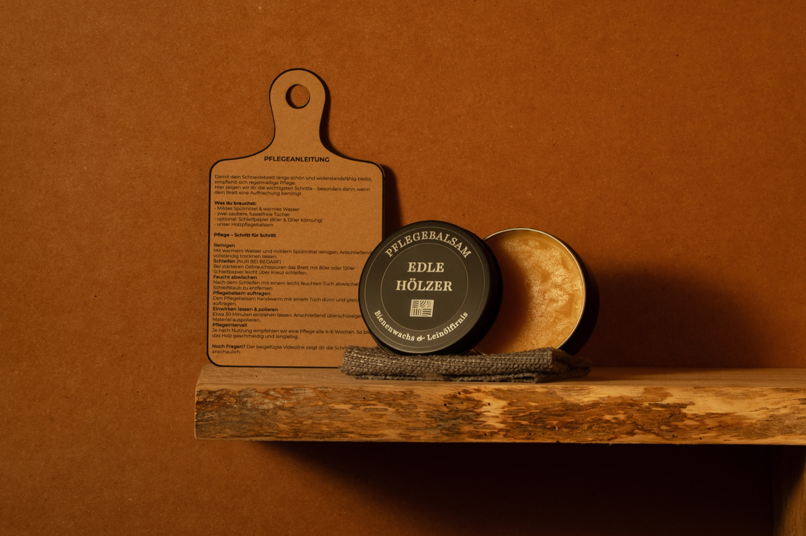

Care
How to restore a wooden cutting board properly.
A well-made board can take years of use. But solid wood is not maintenance-free. This is how you restore the surface properly — sand it clean, oil it right, and make it last.
This is the process. Nothing more.
Sanding. Wiping. Oiling. No shortcuts. No unnecessary steps. Just what actually works.
What you actually need
- 80 grit sandpaper for material removal
- 120 grit sandpaper for refinement
- Optional: 240 grit for a finer finish
- A clean cloth
- Water for wiping between passes
- A proper oil finish or our care balm
Step by step: restore the board properly
Clean and let it dry
The board must be completely dry before sanding.
Start with 80 grit
This removes wear, stains and rough areas first.
Work across the grain once
That helps level the surface more evenly.
Wipe between passes
Remove dust and check the surface before continuing.
Refine with 120 grit
For most boards, this is enough. Go to 240 only if needed.
Apply oil or balm
Use a thin coat, let it soak in, then wipe off the excess.
Let it dry
The surface will look richer, cleaner and more balanced again.
How often should you oil a cutting board?
Oil your board whenever the surface starts to look dry or dull. For regular use, every few weeks is often enough.
Which oil is best for cutting boards?
Use food-safe finishes such as linseed oil or a proper care balm. Avoid random household oils and cheap alternatives.
Can you sand an end grain cutting board?
Yes. Use controlled sanding and proper grit progression. End grain boards can be restored well, but they require a bit more precision.
What to avoid
No dishwasher. No soaking. No cheap oils. No aggressive sanding without control.
When we take over
For damaged or warped boards, professional restoration makes more sense.

Our care product
Care balm from beeswax and linseed oil.
Food-safe. Handmade. No additives. One application is enough. Your board is protected immediately.
View product